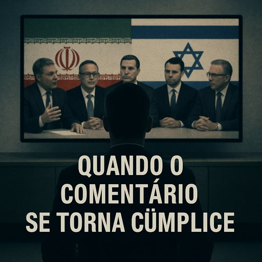

Publicado em 2025-06-22 11:52:50
Há dias em que ligar a televisão em Portugal é como abrir uma caixa de ecos surdos. Comentadores, políticos reciclados, académicos de cátedra dourada — todos desfilam com a solenidade de quem julga saber, mas apenas repete, como papagaios diplomados, uma cartilha já bolorenta. Com ar grave e sobrancelha arqueada, falam da “resposta desproporcional de Israel”, do “papel civilizacional do Irão”, da “legitimidade dos movimentos armados”. A esta miséria moral chamam... análise.
Não se ouve uma palavra clara sobre os ataques do Hamas. Nada sobre os reféns, os foguetes, os túneis da morte. Silêncio sobre a opressão brutal do regime iraniano contra mulheres e dissidentes. O terrorismo é varrido para debaixo do tapete linguístico do “contexto”. E o mal, esse velho mal, lá vai ganhando espaço entre as sílabas envernizadas de uma elite amedrontada.
Portugal, terra de bravos na história, hoje parece país de covardes diplomáticos. O medo de dizer a verdade grita mais alto do que a própria verdade. Preferimos a neutralidade preguiçosa ao incómodo da coragem. Preferimos parecer sensatos a ser justos.
E no meio disso tudo, as televisões oferecem palco a vozes que confundem imparcialidade com indiferença, legalismo com justiça, e opinião com sabedoria. Velhos comunistas reciclados, nostálgicos da luta anti-imperialista, apontam o dedo a quem se defende, mas calam-se perante os que matam.
Este não é um tempo qualquer. É um tempo em que o terrorismo se traveste de causa nobre, e os ingênuos — ou cúmplices — ajudam-no a desfilar nas passarelas da moral pública.
É preciso dizer basta.
É preciso nomear o mal. Dizer que o terrorismo, venha de onde vier, não pertence à comunidade das nações civilizadas. Que o Irão é um regime repressivo, que o Hamas é um braço da morte, que o Hezbollah é uma serpente armada. E que quem os defende, com palavras doces ou silêncios cúmplices, alimenta a besta.
A história não perdoará os neutros deste tempo sombrio.
E a verdade, ainda que tardia, acabará por ser o julgamento final.
Artigo de Francisco Gonçalves in Fragmentos de Caos